Project OASIS
Overview
I think we all can agree that the place you grow up in along with the people who grow up with you can greatly shape you and your actions. The Bronx isn’t exactly the most luxurious place in the world and the food available there isn’t exactly the healthiest.
I came to a realization after a while that I had been living in food swamps my whole life. Although there were healthier options around me they were overshadowed by the junk. Chicken spots, Chinese spots, fast food restaurants, etc were on almost every block so were the type of things that we were accustomed to, the junk. Even if you do go to the grocery store and pick up supplies for dinner you’d also pick up sugary snacks and frozen food.
The first time I had a blueberry was during my sophomore year of college. I tried hummus the summer of my junior year. I had an avocado for the first time during my senior year.
They were all offered to me from other people. People who ate these things as part of their regular diet, people who had been eating things like this their whole life. I’m sure I’m not the only person who’s experienced something like this before, if I didn’t go to college I would probably still be stuck in that bubble. So I decided to create OASIS as a solution.
Research
I’ve written a document with some thoughts and research and possible plans about what OASIS is and what I can do.
Planning
I want the process to be as simple as possible for the user. They need to be able to get the gist of the site on their first arrival and the flow needs to be seamless. For the identity I needed it to be something that made people feel as though they could engage with it and looks friendly. The color choices I went with were purple, blue, and green because they seem the most inviting and the latter always represents health.
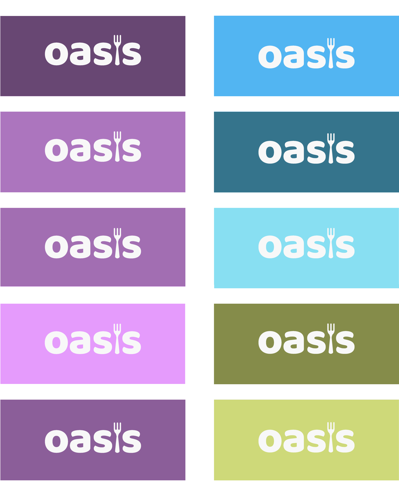
The initial idea that came to me and stuck with me, although it may seem cliche, was a palm tree. I wanted it to be a direct part of the word and the tree just seemed to represent health and community. But, after speaking to my friend Gonzo he recommended that I try a fork instead. It made more sense and I realized that there was a more creative way to go about this. So I replaced the palm tree with a fork and it gave it the perfect look.
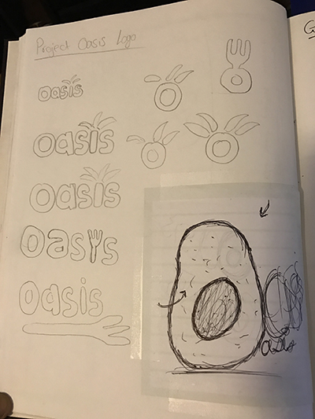
Starting with some sketches I decided to keep things really simple, drawing inspiration from services like Grubhub and Dropbox. (Who do a great job at giving you what you’re looking for on first glance) The only information the user will have to enter is their name, zip code, and email if they want to contact their local representative.
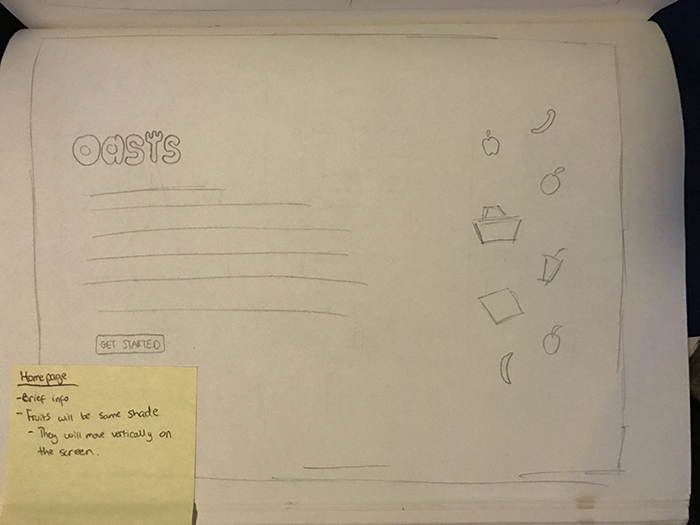
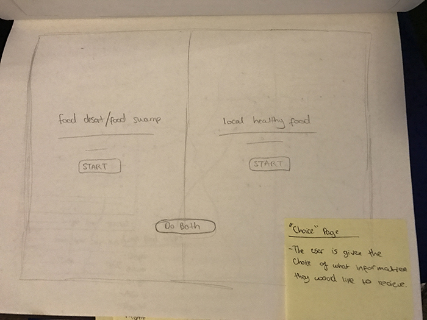
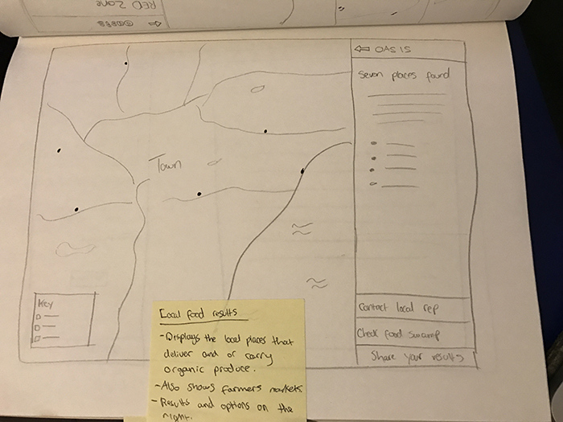
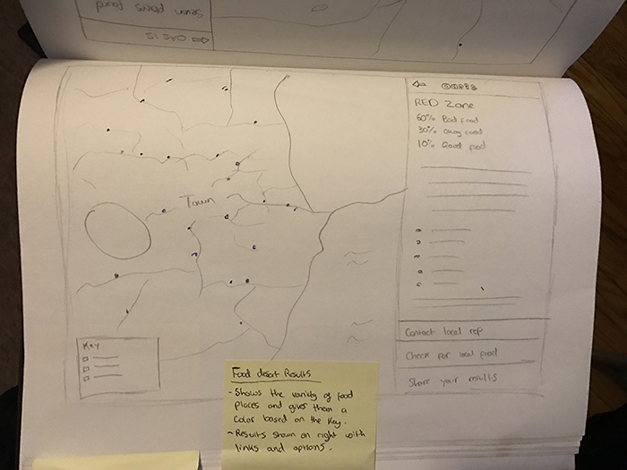
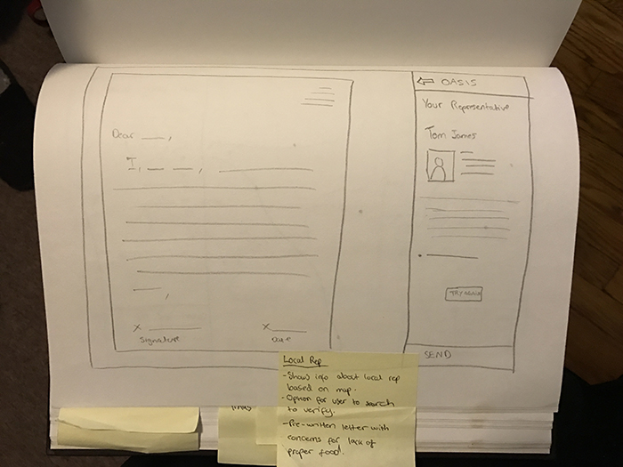
After going through the sketches I realized that a prompt was needed in order to get the users information without having them sign up for an account. (Which would disrupt the user flow and interaction) So I included it in the wireframes.
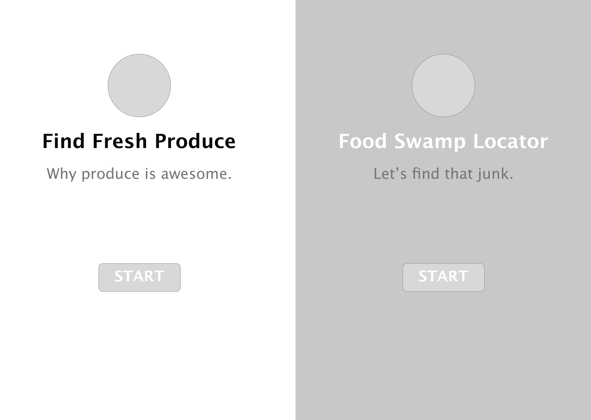
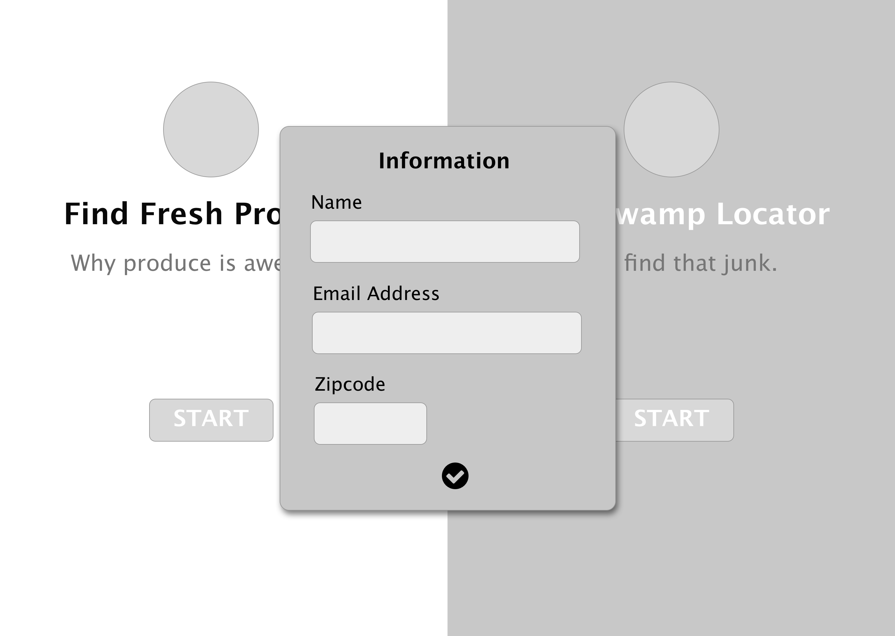


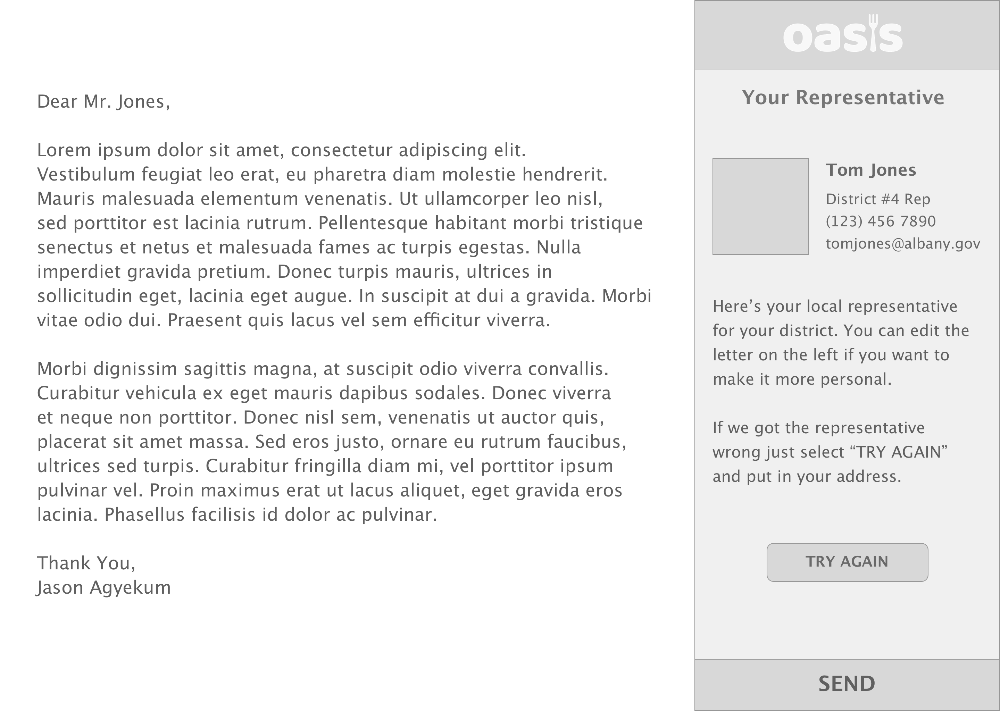
Execution
After going through the different changes and feed back that I received I went with the purple but still kept the green and blue colors involved.


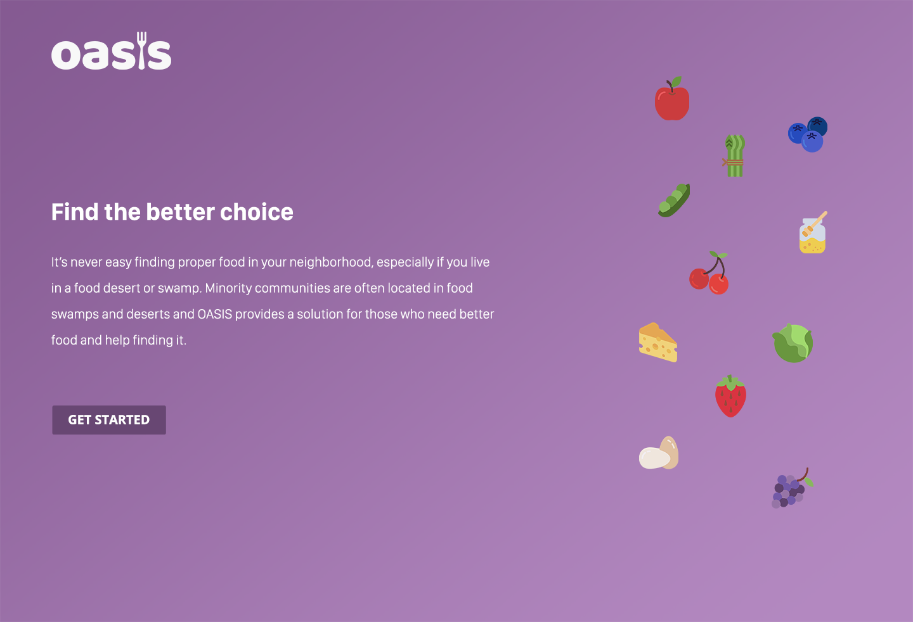